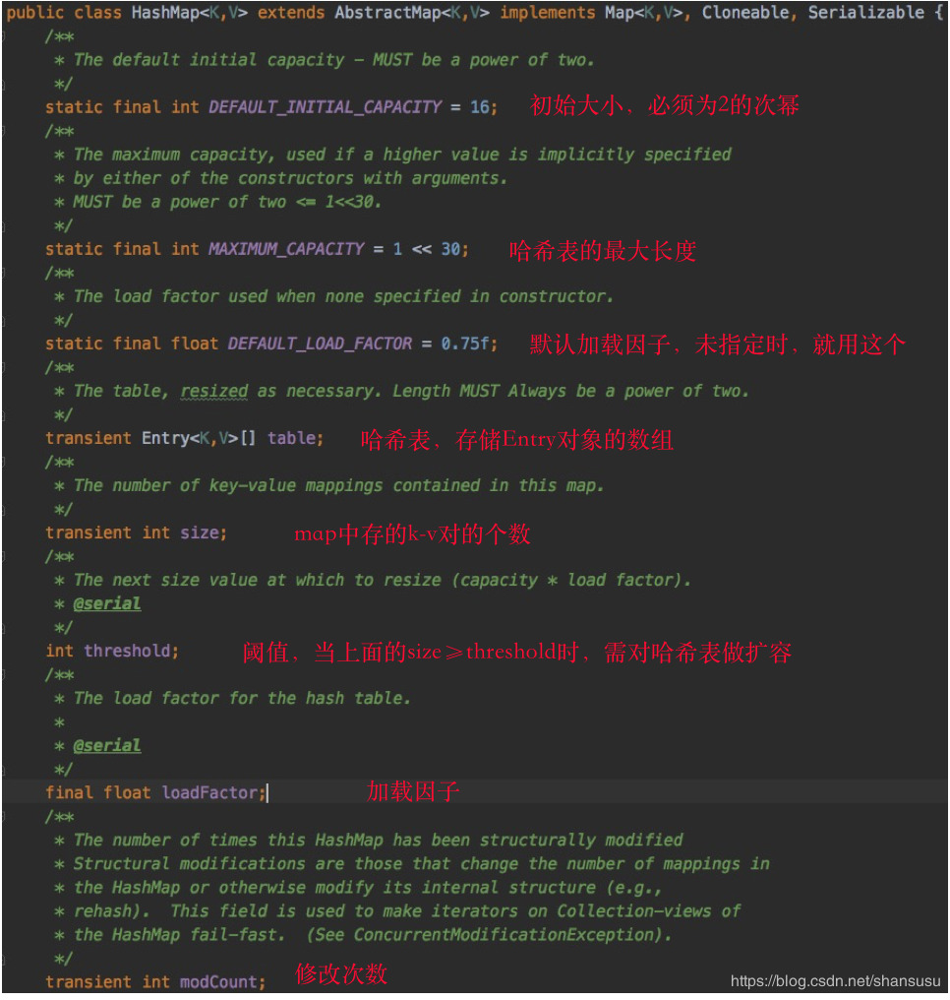

原文连接:https://www.cnblogs.com/tianzhihensu/p/11972780.html
目录
- 序言
- 一、JDK7中的HashMap底层实现
- 二、JDK8中的HashMap底层实现
- 三、HashMap、HashTable是什么关系？
- 四、HashMap线程不安全在哪？
- 五、如何规避HashMap的线程不安全？
- Reference
更多2019年的技术文章，欢迎关注我的微信公众号：码不停蹄的小鼠松（微信号：busy_squirrel），也可扫下方二维码关注获取最新文章哦~
文章目录：
@
序言
在后端的日常开发工作中，集合是使用频率相当高的一个工具，而其中的HashMap，则更是我们用以处理业务逻辑的好帮手，同时HashMap的底层实现和原理，也成了面试题中的常客。
以前曾有详细了解过HashMap的实现原理，看过源码（JDK7版本）。但随着jdk版本的飞速迭代（现在都到JDK13了，但新特性还从没用过。。），主流的jdk使用版本也终于从JDK7挪到了JDK8。
由于JDK的向前兼容，在JDK8的使用过程中也没发现HashMap有什么特别之处，特性并无变化（依然线程不安全）。但最近的一次好奇心驱使，从IDE中点进去看了下HashMap的put()方法，有点儿懵逼，怎么跟我记忆中的不太一样？从JDK7到JDK8，HashMap也做了升级么？升级了什么哪些内容？
借着这股好奇心，把JDK7和JDK8的源码都翻了翻，对两者的实现原理做一下对比，JDK版本都在半年左右一次的速度推陈出新，我们的认知当然也要跟上，不断学习，站在浪潮之巅，不然就要被这滚滚的信息泥石流给裹挟淹没了。
先展示下Map家族的关系层级，有助于我们更好的理解后面的内容。
HashMap的基本知识点介绍就不多啰嗦了，直奔主题，看JDK7和JDK8的功能实现吧。
一、JDK7中的HashMap底层实现
1.1 基础知识
不管是1.7，还是1.8，HashMap的实现框架都是哈希表 + 链表的组合方式。结构图如下：
平常使用最多的就是put()、get()操作，想要了解底层实现，最直接的就是从put()/get()方法看起。不过在具体看源码前，我们先关注几个域变量，打打基础，如下：

上图中，已对各个变量做了简单的解释。
再多说一下，最后一个变量modCount，记录了map新增/删除k-v对，或者内部结构做了调整的次数，其主要作用，是对Map的iterator()操作做一致性校验，如果在iterator操作的过程中，map的数值有修改，直接抛出ConcurrentModificationException异常。
还需要说明的是，上面的域变量中存在一个等式：
threshold = table.length * loadFactor;当执行put()操作放入一个新的值时，如果map中已经存在对应的key，则作替换即可，若不存在，则会首先判断size>=threshold是否成立，这是决定哈希table是否扩容的重要因素。
就使用层面来说，用的最多的莫过于put()方法、get()方法。想要详细了解运作原理，那就先从这两个方法看起吧，这两个方法弄明白了，也就基本能理清HashMap的实现原理了。
1.2 put()方法
当了解了以上的变量和用途后，接下来看下put()方法的具体实现：
如上面的截图代码所示，整个put方法的处理过程，可拆分为四部分：
- part1：特殊key值处理，key为null；
- part2：计算table中目标bucket的下标；
- part3：指定目标bucket，遍历Entry结点链表，若找到key相同的Entry结点，则做替换；
- part4：若未找到目标Entry结点，则新增一个Entry结点。
不知大家有没有发现，上面截图中的put()方法是有返回值的，场景区分如下：
- 场景1：若执行put操作前，key已经存在，那么在执行put操作时，会使用本次的新value值来覆盖前一次的旧value值，返回的就是旧value值；
- 场景2：若key不存在，则返回null值。
下面对put方法的各部分做详细的拆解分析。
1.2.1 特殊key值处理
特殊key值，指的就是key为null。
先说结论：
a) HashMap中，是允许key、value都为null的，且key为null只存一份，多次存储会将旧value值覆盖；
b) key为null的存储位置，都统一放在下标为0的bucket，即：table[0]位置的链表；
c) 如果是第一次对key=null做put操作，将会在table[0]的位置新增一个Entry结点，使用头插法做链表插入。
上代码：
private V putForNullKey(V value) {
for (Entry<K,V> e = table[0]; e != null; e = e.next) {
if (e.key == null) {
V oldValue = e.value;
e.value = value;
e.recordAccess(this);
return oldValue;
}
}
modCount++;
addEntry(0, null, value, 0);
return null;
}
/**
* Adds a new entry with the specified key, value and hash code to
* the specified bucket. It is the responsibility of this
* method to resize the table if appropriate.
*
* Subclass overrides this to alter the behavior of put method.
*/
void addEntry(int hash, K key, V value, int bucketIndex) {
if ((size >= threshold) && (null != table[bucketIndex])) {
resize(2 * table.length);
hash = (null != key) ? hash(key) : 0;
bucketIndex = indexFor(hash, table.length);
}
createEntry(hash, key, value, bucketIndex);
}
/**
* Like addEntry except that this version is used when creating entries
* as part of Map construction or "pseudo-construction" (cloning,
* deserialization). This version needn't worry about resizing the table.
*
* Subclass overrides this to alter the behavior of HashMap(Map),
* clone, and readObject.
*/
void createEntry(int hash, K key, V value, int bucketIndex) {
Entry<K,V> e = table[bucketIndex];
table[bucketIndex] = new Entry<>(hash, key, value, e);
size++;
}putForNullKey()方法中的代码较为简单：首先选择table[0]位置的链表，然后对链表做遍历操作，如果有结点的key为null，则将新value值替换掉旧value值，返回旧value值，如果未找到，则新增一个key为null的Entry结点。
重点我们看下第二个方法addEntry()。
这是一个通用方法：
给定hash、key、value、bucket下标，新增一个Entry结点，另外还担负了扩容职责。如果哈希表中存放的k-v对数量超过了当前阈值(threshold = table.length * loadFactor)，且当前的bucket下标有链表存在，那么就做扩容处理（resize）。扩容后，重新计算hash，最终得到新的bucket下标，然后使用头插法新增结点。
1.2.2 扩容
上一节有提及，当k-v对的容量超出一定限度后，需要对哈希table做扩容操作。那么问题来了，怎么扩容的？
下面看下源代码：
有两个核心点：
a) 扩容后大小是扩容前的2倍；
oldCapacity=table.length;
newCapacity = 2 * oldCapacity;b) 数据搬迁，从旧table迁到扩容后的新table。
为避免碰撞过多，先决策是否需要对每个Entry链表结点重新hash，然后根据hash值计算得到bucket下标，然后使用头插法做结点迁移。
1.2.3 如何计算bucket下标？
① hash值的计算
首先得有key的hash值，就是一个整数，int类型，其计算方式使用了一种可尽量减少碰撞的算式（高位运算），具体原理不再展开，只要知道一点就行：使用key的hashCode作为算式的输入，得到了hash值。
从以上知识点，我们可以得到一个推论：
对于两个对象，若其hashCode相同，那么两个对象的hash值就一定相同。
这里还牵涉到另外一个知识点。对于HashMap中key的类型，必须满足以下的条件：
若两个对象逻辑相等，那么他们的hashCode一定相等，反之却不一定成立。
逻辑相等的含义就比较宽泛了，我们可以将逻辑的相等定义为两个对象的内存地址相同，也可以定义为对象的某个域值相等，自定义两个对象的逻辑相等，可通过重写Object类的equals()方法来实现。
比如String类，请看以下代码：
String str1 = "abc";
String str2 = new String("abc");
System.out.println(str1 == str2); // false，两个对象的内存地址并不同
System.out.println(str1.equals(str2)); // true 两个对象的域值相同，都存储了 abc 这三个字符对于上面代码中的str1、str2两个对象，虽然它们的内存地址不同，但根据String类中对Object类的equals()方法的重写(@override)，两个对象的域变量（即char数组）都存储了'a'、'b'、'c'三个字符，因此逻辑上是相等的。既然str1、str2两个对象逻辑上相等，那么一定有如下结果：
System.out.println(str1.hashCode() == str2.hashCode());
---输出---
true从而我们就可以知道，在同一个HashMap对象中，会有如下结果：
String str1 = "abc";
String str2 = new String("abc");
Map<String, Integer> testMap = new HashMap<>();
testMap.put(str1, 12);
testMap.put(str2, 13);
String str3 = new StringBuilder("ab").append("c").toString();
System.out.println(testMap.get(str3));
---输出---
13另外，我们也可以反过来想一下。
假设HashMap的key不满足上面提到的条件，即：两个对象相等的情况下，他们的hashCode可能不一致。那么，这会带来什么后果呢？以上面示例代码中的str1、str2为例，若它们的hashCode不相等，那么对应的hash也就可能不相等（注意：这里是可能不相等，也有可能相等），testMap做put操作时，str1、str2为就会被分配到不同的bucket上，导致的最直接后果就是会存储两份。间接的后果那就更多了，比如：使用str3对象执行testMap.get(str3)操作时，可能获取不到值，更进一步的后果就是这部分无法触达的对象无法回收，导致内存泄漏。
因此，再重新一遍，HashMap的key所对应的类型，一定要满足如下条件：
若两个对象逻辑相等，那么他们的hashCode一定相等，反之却不一定成立。
② 取模的逻辑
前面我们分析了hash值的计算，接下来就可以引出bucket下标的计算：
/**
* Returns index for hash code h.
*/
static int indexFor(int h, int length) {
return h & (length-1);
}计算相当简洁：将table的容量与hash值做“与”运算，得到哈希table的bucket下标。
③ 拓展
这种通俗的不能再通俗的计算大家都能看懂，但为何要这样做呢？背后的思考是什么？在看到下面的解释前，大家可以先思考下~
在文档开头，给出了HashMap类中的各个域变量。其中，哈希table的初始大小默认设置为16，为2的次幂数。后面在扩容时，都是以2的倍数来扩容。为什么非要将哈希table的大小控制为2的次幂数？
原因1：降低发生碰撞的概率，使散列更均匀。根据key的hash值计算bucket的下标位置时，使用“与”运算公式：h & (length-1)，当哈希表长度为2的次幂时，等同于使用表长度对hash值取模（不信大家可以自己演算一下），散列更均匀；
原因2：表的长度为2的次幂，那么(length-1)的二进制最后一位一定是1，在对hash值做“与”运算时，最后一位就可能为1，也可能为0，换句话说，取模的结果既有偶数，又有奇数。设想若(length-1)为偶数，那么“与”运算后的值只能是0，奇数下标的bucket就永远散列不到，会浪费一半的空间。
1.2.4 在目标bucket中遍历Entry结点
先把这部分代码拎出来：
...
int i = indexFor(hash, table.length);
for (Entry<K,V> e = table[i]; e != null; e = e.next) {
Object k;
if (e.hash == hash && ((k = e.key) == key || key.equals(k))) {
V oldValue = e.value;
e.value = value;
e.recordAccess(this);
return oldValue;
}
}
...通过hash值计算出下标，找到对应的目标bucket，然后对链表做遍历操作，逐个比较，如下：
注意这里的查找条件：e.hash == hash && ((k = e.key) == key || key.equals(k))
结点的key与目标key的相等，要么内存地址相等，要么逻辑上相等，两者有一个满足即可。
1.3 get()方法
相比于put()方法，get()方法的实现就相对简单多了。主要分为两步，先是通过key的hash值计算目标bucket的下标，然后遍历对应bucket上的链表，逐个对比，得到结果。
public V get(Object key) {
if (key == null)
return getForNullKey();
Entry<K,V> entry = getEntry(key);
return null == entry ? null : entry.getValue();
}
/**
* Returns the entry associated with the specified key in the
* HashMap. Returns null if the HashMap contains no mapping
* for the key.
*/
final Entry<K,V> getEntry(Object key) {
int hash = (key == null) ? 0 : hash(key);
for (Entry<K,V> e = table[indexFor(hash, table.length)];
e != null;
e = e.next) {
Object k;
if (e.hash == hash &&
((k = e.key) == key || (key != null && key.equals(k))))
return e;
}
return null;
}1.4 Map中的迭代器Iterator
1.4.1 Map遍历的几种方式
先问个问题，你能想到几种遍历Map的方式？
方式1：Iterator迭代器
Iterator<Entry<String, Integer>> iterator = testMap.entrySet().iterator();
while (iterator.hasNext()) {
Entry<String, Integer> next = iterator.next();
System.out.println(next.getKey() + ":" + next.getValue());
}逐个获取哈希table中的每个bucket中的每个Entry结点，后面会详细介绍。
方式2：最常见的使用方式，可同时得到key、value值
// 方式一
for (Map.Entry<String, Integer> entry : testMap.entrySet()) {
System.out.println(entry.getKey() + ":" + entry.getValue());
}这种方式是一个语法糖，我们可通过反编译命令javap，或通过IDE来查下编译之后的语句：
Iterator var2 = testMap.entrySet().iterator();
while(var2.hasNext()) {
Entry<String, Integer> entry = (Entry)var2.next();
System.out.println((String)entry.getKey() + ":" + entry.getValue());
}其底层还是使用的是Iterator功能。
方式3：使用foreach方式（JDK1.8才有）
testMap.forEach((key, value) -> {
System.out.println(key + ":" + value);
});这是一种Lambda表达式。foreach也是一个语法糖，其内部是使用了方式二的处理方式，Map的foreach方法实现如下：
方式4：通过key的set集合遍历
Iterator<String> keyIterator = testMap.keySet().iterator();
while (keyIterator.hasNext()) {
String key = keyIterator.next();
System.out.println(key + ":" + testMap.get(key));
}这种也是Iterator的方式，不过是通过Set类的iterator方式。
相比方式1，这种方式在获取value时，还需要再次通过testMap.get()的方式，性能相比方式1要降低很多。但两者有各自的使用场景，若在Map的遍历中仅使用key，则方式4较为适合，若需用到value，推荐使用方式1。
从前面的方式1和方式2可知，方式4还有如下的变体（语法糖的方式）：
for (String key : testMap.keySet()) {
System.out.println(key + ":" + testMap.get(key));
}综合以上，在遍历Map时，从性能方面考虑，若需同时使用key和value，推荐使用方式1或方式2，若单纯只是使用key，推荐使用方式4。任何情况下都不推荐使用方式3，因为会新增二次查询（通过key再一次在Map中查找value）。
另外，使用方式1时，还可以做remove操作，这个下面会讲到。
1.4.2 Iterator的实现原理
先看一张类/接口的继承关系图：
Iterator为一个顶层接口，只提供了三个基础方法声明：
public interface Iterator<E> {
boolean hasNext();
E next();
default void remove() {
throw new UnsupportedOperationException("remove");
}
}这也是我们使用Iterator时绕不开的三个方法。
在HashMap中，首先是新增了一个内部抽象类HashIterator，如下：
我们以Entry结点的遍历为例（map的key、value的Iterator遍历方式都类似）：
Iterator<Entry<String, Integer>> iterator = testMap.entrySet().iterator();
while (iterator.hasNext()) {
Entry<String, Integer> next = iterator.next();
System.out.println(next.getKey() + ":" + next.getValue());
}首先，第一行代码，找到Iterator接口的具体实现类EntryIterator：
private final class EntryIterator extends HashIterator<Map.Entry<K,V>> {
public Map.Entry<K,V> next() {
return nextEntry();
}
}非常简洁有木有？？？就只有一个next()方法，其正是对Iterator接口的next()方法的实现。方法内部也只有一行，指向了父类的nextEntry()方法，即上面截图中的HashIterator类中的nextEntry()方法。
HashMap中的Iterator实现原理也不过如此，就是这么朴实无华，是不是都想动手自己撸一个HashMap的实现了？嗯，你可以的！！！
1.5 fail-fast策略
和fail-fast经常一起出现的还有一个异常类ConcurrentModificationException，接下来我们聊下这两者是什么关系，以及为什么搞这么个策略出来。
什么是fail-fast？我们可以称它为"快速失效策略"，下面是Wikipedia中的解释：
In systems design, a fail-fast system is one which immediately reports at its interface any condition that is likely to indicate a failure. Fail-fast systems are usually designed to stop normal operation rather than attempt to continue a possibly flawed process.
Such designs often check the system's state at several points in an operation, so any failures can be detected early. The responsibility of a fail-fast module is detecting errors, then letting the next-highest level of the system handle them.
大白话翻译过来，就是在系统设计中，当遇到可能会诱导失败的条件时立即上报错误，快速失效系统往往被设计在立即终止正常操作过程，而不是尝试去继续一个可能会存在错误的过程。
再简洁点说，就是尽可能早的发现问题，立即终止当前执行过程，由更高层级的系统来做处理。
在HashMap中，我们前面提到的modCount域变量，就是用于实现hashMap中的fail-fast。出现这种情况，往往是在非同步的多线程并发操作。
在对Map的做迭代(Iterator)操作时，会将modCount域变量赋值给expectedModCount局部变量。在迭代过程中，用于做内容修改次数的一致性校验。若此时有其他线程或本线程的其他操作对此Map做了内容修改时，那么就会导致modCount和expectedModCount不一致，立即抛出异常ConcurrentModificationException。
举个栗子：
public static void main(String[] args) {
Map<String, Integer> testMap = new HashMap<>();
testMap.put("s1", 11);
testMap.put("s2", 22);
testMap.put("s3", 33);
for (Map.Entry<String, Integer> entry : testMap.entrySet()) {
String key = entry.getKey();
if ("s1".equals(key)) {
testMap.remove(key);
}
}
}
---- output ---
Exception in thread "main" java.util.ConcurrentModificationException
at java.util.HashMap$HashIterator.nextNode(HashMap.java:1437)
at java.util.HashMap$EntryIterator.next(HashMap.java:1471)
at java.util.HashMap$EntryIterator.next(HashMap.java:1469)
...正确的删除Map元素的姿势：只有一个，Iteator的remove()方法。
// 方式三
Iterator<Entry<String, Integer>> iterator = testMap.entrySet().iterator();
while (iterator.hasNext()) {
Entry<String, Integer> next = iterator.next();
System.out.println(next.getKey() + ":" + next.getValue());
if (next.getKey().equals("s2")) {
iterator.remove();
}
}但也要注意一点，能安全删除，并不代表就是多线程安全的，在多线程并发执行时，若都执行上面的操作，因未设置为同步方法，也可能导致modCount与expectedModCount不一致，从而抛异常ConcurrentModificationException。
线程不安全的体现和规避方式，后续章节会详细提及。
二、JDK8中的HashMap底层实现
前面我们已经详细剖析了HashMap在JDK7中的实现，不知大家有没有发现其中可以优化的地方？比如哈希表中因为hash碰撞而产生的链表结构，如果数据量很大，那么产生碰撞的几率很增加，这带来的后果就是链表长度也一直在增加，对于查询来说，性能会越来越低。如何提升查询性能，成了JDK8中的HashMap要解决的问题。
因此，相比于JDK7，HashMap在JDK8中做链表结构做了优化（但仍然线程不安全），在一定条件下将链表转为红黑树，提升查询效率。
JDK8中的HashMap其底层存储结构如下：
相比于JDK7，JDK8中的HashMap会将较长的链表转为红黑树，这也是与JDK7的核心差异。下面先看下put()方法的实现。
2.1 put()操作
在进一步分析put()操作前，先说明一下：除了底层存储结构有调整，链表结点的定义也由Entry类转为了Node类，但内核没有变化，不影响理解。
先上源代码：
是不是很长很复杂？其实不难，只要记住上面的底层存储结构图，代码就很容易看懂。还是一样的存储套路，先根据key确定在哈希table中的下标，找到对应的bucket，遍历链表（或红黑树），做插入操作。在JDK7中，新增结点是使用头插法，但在JDK8中，在链表使用尾插法，将待新增结点追加到链表末尾。
为方便理解，将上面的代码转为了下面的流程图：
步骤①：若哈希table为null，或长度为0，则做一次扩容操作；
步骤②：根据index找到目标bucket后，若当前bucket上没有结点，那么直接新增一个结点，赋值给该bucket；
步骤③：若当前bucket上有链表，且头结点就匹配，那么直接做替换即可；
步骤④：若当前bucket上的是树结构，则转为红黑树的插入操作；
步骤⑤：若步骤①、②、③、④都不成立，则对链表做遍历操作。
a) 若链表中有结点匹配，则做value替换；
b）若没有结点匹配，则在链表末尾追加。同时，执行以下操作：
i) 若链表长度大于TREEIFY_THRESHOLD，则执行红黑树转换操作；
ii) 若条件i) 不成立，则执行扩容resize()操作。
以上5步都执行完后，再看当前Map中存储的k-v对的数量是否超出了threshold，若超出，还需再次扩容。
红黑树的转换操作如下：
/**
* Replaces all linked nodes in bin at index for given hash unless
* table is too small, in which case resizes instead.
*/
final void treeifyBin(Node<K,V>[] tab, int hash) {
int n, index; Node<K,V> e;
// 若表为空，或表长度小于MIN_TREEIFY_CAPACITY，也不做转换，直接做扩容处理。
if (tab == null || (n = tab.length) < MIN_TREEIFY_CAPACITY)
resize();
else if ((e = tab[index = (n - 1) & hash]) != null) {
TreeNode<K,V> hd = null, tl = null;
do {
TreeNode<K,V> p = replacementTreeNode(e, null);
if (tl == null)
hd = p;
else {
p.prev = tl;
tl.next = p;
}
tl = p;
} while ((e = e.next) != null);
if ((tab[index] = hd) != null)
hd.treeify(tab);
}
}2.2 扩容操作
什么场景下会触发扩容？
场景1：哈希table为null或长度为0；
场景2：Map中存储的k-v对数量超过了阈值threshold；
场景3：链表中的长度超过了TREEIFY_THRESHOLD，但表长度却小于MIN_TREEIFY_CAPACITY。
一般的扩容分为2步，第1步是对哈希表长度的扩展（2倍），第2步是将旧table中的数据搬到新table上。
那么，在JDK8中，HashMap是如何扩容的呢？
上源代码片段：
...
// 前面已经做了第1步的长度拓展，我们主要分析第2步的操作：如何迁移数据
table = newTab;
if (oldTab != null) {
// 循环遍历哈希table的每个不为null的bucket
// 注意，这里是"++j"，略过了oldTab[0]的处理
for (int j = 0; j < oldCap; ++j) {
Node<K,V> e;
if ((e = oldTab[j]) != null) {
oldTab[j] = null;
// 若只有一个结点，则原地存储
if (e.next == null)
newTab[e.hash & (newCap - 1)] = e;
else if (e instanceof TreeNode)
((TreeNode<K,V>)e).split(this, newTab, j, oldCap);
else { // preserve order
// "lo"前缀的代表要在原bucket上存储，"hi"前缀的代表要在新的bucket上存储
// loHead代表是链表的头结点，loTail代表链表的尾结点
Node<K,V> loHead = null, loTail = null;
Node<K,V> hiHead = null, hiTail = null;
Node<K,V> next;
do {
next = e.next;
// 以oldCap=8为例，
// 0001 1000 e.hash=24
// & 0000 1000 oldCap=8
// = 0000 1000 --> 不为0，需要迁移
// 这种规律可发现，[oldCap, (2*oldCap-1)]之间的数据，
// 以及在此基础上加n*2*oldCap的数据，都需要做迁移，剩余的则不用迁移
if ((e.hash & oldCap) == 0) {
// 这种是有序插入，即依次将原链表的结点追加到当前链表的末尾
if (loTail == null)
loHead = e;
else
loTail.next = e;
loTail = e;
}
else {
if (hiTail == null)
hiHead = e;
else
hiTail.next = e;
hiTail = e;
}
} while ((e = next) != null);
if (loTail != null) {
loTail.next = null;
newTab[j] = loHead;
}
if (hiTail != null) {
hiTail.next = null;
// 需要搬迁的结点，新下标为从当前下标往前挪oldCap个距离。
newTab[j + oldCap] = hiHead;
}
}
}
}
}2.3 get()操作
了解了上面的put()操作，get()操作就比较简单了。
public V get(Object key) {
Node<K,V> e;
return (e = getNode(hash(key), key)) == null ? null : e.value;
}
final Node<K,V> getNode(int hash, Object key) {
Node<K,V>[] tab; Node<K,V> first, e; int n; K k;
if ((tab = table) != null && (n = tab.length) > 0 &&
(first = tab[(n - 1) & hash]) != null) {
if (first.hash == hash && // always check first node
((k = first.key) == key || (key != null && key.equals(k))))
return first;
if ((e = first.next) != null) {
if (first instanceof TreeNode)
return ((TreeNode<K,V>)first).getTreeNode(hash, key);
do {
if (e.hash == hash &&
((k = e.key) == key || (key != null && key.equals(k))))
return e;
} while ((e = e.next) != null);
}
}
return null;
}先根据key计算hash值，进一步计算得到哈希table的目标index，若此bucket上为红黑树，则再红黑树上查找，若不是红黑树，遍历链表。
三、HashMap、HashTable是什么关系？
再把文章开头的这张图放出来，温习一下：

3.1 共同点与异同点
共同点：
- 底层都是使用哈希表 + 链表的实现方式。
区别：
- 从层级结构上看，HashMap、HashTable有一个共用的
Map接口。另外，HashTable还单独继承了一个抽象类Dictionary； - HashTable诞生自JDK1.0，HashMap从JDK1.2之后才有；
- HashTable线程安全，HashMap线程不安全；
- 初始值和扩容方式不同。HashTable的初始值为11，扩容为原大小的
2*d+1。容量大小都采用奇数且为素数，且采用取模法，这种方式散列更均匀。但有个缺点就是对素数取模的性能较低（涉及到除法运算），而HashTable的长度都是2的次幂，设计就较为巧妙，前面章节也提到过，这种方式的取模都是直接做位运算，性能较好。 - HashMap的key、value都可为null，且value可多次为null，key多次为null时会覆盖。当HashTable的key、value都不可为null，否则直接NPE(NullPointException)。
示例：
public static void main(String[] args) {
Map<String, Integer> testTable = new Hashtable<>();
testTable.put(null, 23); // 抛NPE
testTable.put("s1", null); // 抛NPE
}看下put()方法的源码：
public synchronized V put(K key, V value) {
// Make sure the value is not null
if (value == null) {
throw new NullPointerException();
}
// Makes sure the key is not already in the hashtable.
Entry<?,?> tab[] = table;
int hash = key.hashCode();
int index = (hash & 0x7FFFFFFF) % tab.length;
@SuppressWarnings("unchecked")
Entry<K,V> entry = (Entry<K,V>)tab[index];
for(; entry != null ; entry = entry.next) {
if ((entry.hash == hash) && entry.key.equals(key)) {
V old = entry.value;
entry.value = value;
return old;
}
}
addEntry(hash, key, value, index);
return null;
}源码中不允许value为null，若为null则直接抛NPE。
对于key为null时，源码第9行：int hash = key.hashCode(); 未做判空操作，也会外抛NPE。
另外，我们现在看到的抽象类Dictionary，是一个已经废弃的类，源码注释中有如下说明：
<strong>NOTE: This class is obsolete. New implementations should
implement the Map interface, rather than extending this class.</strong>3.2 HashMap的线程安全
能保证线程线程安全的方式有多个，比如添加synchronized关键字，或者使用lock机制。两者的差异不在此展开，后续会写有关线程安全的文章，到时再详细说明。而HashTable使用了前者，即synchronized关键字。
put操作、get操作、remove操作、equals操作，都使用了synchronized关键字修饰。
这么做是保证了HashTable对象的线程安全特性，但同样也带来了问题，突出问题就是效率低下。为何会说它效率低下呢？
因为按synchronized的特性，对于多线程共享的临界资源，同一时刻只能有一个线程在占用，其他线程必须原地等待，为方便理解，大家不妨想下计时用的沙漏，中间最细的瓶颈处阻挡了上方细沙的下落，同样的道理，当有大量线程要执行get()操作时，也存在此类问题，大量线程必须排队一个个处理。
这时可能会有人说，既然get()方法只是获取数据，并没有修改Map的结构和数据，不加不就行了吗？不好意思，不加也不行，别的方法都加，就你不加，会有一种场景，那就是A线程在做put或remove操作时，B线程、C线程此时都可以同时执行get操作，可能哈希table已经被A线程改变了，也会带来问题，因此不加也不行。
现在好了，HashMap线程不安全，HashTable虽然线程安全，但性能差，那怎么破？使用ConcurrentHashMap类吧，既线程安全，还操作高效，谁用谁说好。莫急，下面章节会详细解释ConcurrentHashMap类。
四、HashMap线程不安全在哪？
本章节主要探讨下HashMap的线程不安全会带来哪些方面的问题。
4.1 数据覆盖问题
两个线程执行put()操作时，可能导致数据覆盖。JDK7版本和JDK8版本的都存在此问题，这里以JDK7为例。
假设A、B两个线程同时执行put()操作，且两个key都指向同一个buekct，那么此时两个结点，都会做头插法。
先看这里的代码实现：
public V put(K key, V value) {
...
addEntry(hash, key, value, i);
}
void addEntry(int hash, K key, V value, int bucketIndex) {
...
createEntry(hash, key, value, bucketIndex);
}
void createEntry(int hash, K key, V value, int bucketIndex) {
Entry<K,V> e = table[bucketIndex];
table[bucketIndex] = new Entry<>(hash, key, value, e);
size++;
}看下最后的createEntry()方法，首先获取到了bucket上的头结点，然后再将新结点作为bucket的头部，并指向旧的头结点，完成一次头插法的操作。
当线程A和线程B都获取到了bucket的头结点后，若此时线程A的时间片用完，线程B将其新数据完成了头插法操作，此时轮到线程A操作，但这时线程A所据有的旧头结点已经过时了（并未包含线程B刚插入的新结点），线程A再做头插法操作，就会抹掉B刚刚新增的结点，导致数据丢失。
其实不光是put()操作，删除操作、修改操作，同样都会有覆盖问题。
4.2 扩容时导致死循环
这是最常遇到的情况，也是面试经常被问及的考题。但说实话，这个多线程环境下导致的死循环问题，并不是那么容易解释清楚，因为这里已经深入到了扩容的细节。这里尽可能简单的描述死循环的产生过程。
另外，只有JDK7及以前的版本会存在死循环现象，在JDK8中，resize()方式已经做了调整，使用两队链表，且都是使用的尾插法，及时多线程下，也顶多是从头结点再做一次尾插法，不会造成死循环。而JDK7能造成死循环，就是因为resize()时使用了头插法，将原本的顺序做了反转，才留下了死循环的机会。
在进一步说明死循环的过程前，我们先看下JDK7中的扩容代码片段：
void transfer(Entry[] newTable, boolean rehash) {
int newCapacity = newTable.length;
for (Entry<K,V> e : table) {
while(null != e) {
Entry<K,V> next = e.next;
if (rehash) {
e.hash = null == e.key ? 0 : hash(e.key);
}
int i = indexFor(e.hash, newCapacity);
e.next = newTable[i];
newTable[i] = e;
e = next;
}
}
}其实就是简单的链表反转，再进一步简化的话，分为当前结点e，以及下一个结点e.next。我们以链表a->b->c->null为例，两个线程A和B，分别做扩容操作。
原表：
线程A和B各自新增了一个新的哈希table，在线程A已做完扩容操作后，线程B才开始扩容。此时对于线程B来说，当前结点e指向a结点，下一个结点e.next仍然指向b结点（此时在线程A的链表中，已经是c->b->a的顺序）。按照头插法，哈希表的bucket指向a结点，此时a结点成为线程B中链表的头结点，如下图所示：
a结点成为线程B中链表的头结点后，下一个结点e.next为b结点。既然下一个结点e.next不为null，那么当前结点e就变成了b结点，下一个结点e.next变为a结点。继续执行头插法，将b变为链表的头结点，同时next指针指向旧的头节点a，如下图：
此时，下一个结点e.next为a节点，不为null，继续头插法。指针后移，那么当前结点e就成为了a结点，下一个结点为null。将a结点作为线程B链表中的头结点，并将next指针指向原来的旧头结点b，如下图所示：
此时，已形成环链表。同时下一个结点e.next为null，流程结束。
4.3 小结
多线程环境下使用HashMap，会引起各类问题，上面仅为不安全问题的两个典型示例，具体问题无法一一列举，但大体会分为以下三类：
- 死循环
- 数据重复
- 数据丢失（覆盖）
在JDK1.5之前，多线程环境往往使用HashTable，但在JDK1.5及以后的版本中，在并发包中引入了专门用于多线程环境的ConcurrentHashMap类，采用分段锁实现了线程安全，相比HashTable有更高的性能，推荐使用。
五、如何规避HashMap的线程不安全？
前面提到了HashMap在多线程环境下的各类不安全问题，那么有哪些方式可以转成线程安全的呢？
5.1 将Map转为包装类
如何转？使用Collections.SynchronizedMap()方法，示例代码：
Map<String, Integer> testMap = new HashMap<>();
...
// 转为线程安全的map
Map<String, Integer> map = Collections.synchronizedMap(testMap);其内部实现也很简单，等同于HashTable，只是对当前传入的map对象，新增对象锁（synchronized）：
// 源码来自Collections类
private static class SynchronizedMap<K,V> implements Map<K,V>, Serializable {
private static final long serialVersionUID = 1978198479659022715L;
private final Map<K,V> m; // Backing Map
final Object mutex; // Object on which to synchronize
SynchronizedMap(Map<K,V> m) {
this.m = Objects.requireNonNull(m);
mutex = this;
}
SynchronizedMap(Map<K,V> m, Object mutex) {
this.m = m;
this.mutex = mutex;
}
public int size() {
synchronized (mutex) {return m.size();}
}
public boolean isEmpty() {
synchronized (mutex) {return m.isEmpty();}
}
public boolean containsKey(Object key) {
synchronized (mutex) {return m.containsKey(key);}
}
public boolean containsValue(Object value) {
synchronized (mutex) {return m.containsValue(value);}
}
public V get(Object key) {
synchronized (mutex) {return m.get(key);}
}
public V put(K key, V value) {
synchronized (mutex) {return m.put(key, value);}
}
public V remove(Object key) {
synchronized (mutex) {return m.remove(key);}
}
public void putAll(Map<? extends K, ? extends V> map) {
synchronized (mutex) {m.putAll(map);}
}
public void clear() {
synchronized (mutex) {m.clear();}
}
}5.2 使用ConcurrentHashMap
既然HashMap类是线程不安全的，那就不妨找个线程安全的替代品——ConcurrentHashMap类。
使用示例：
Map<String, Integer> susuMap = new ConcurrentHashMap<>();
susuMap.put("susu1", 111);
susuMap.put("susu2", 222);
System.out.println(susuMap.get("susu1"));在使用习惯上完全兼容了HashMap的使用。
JDK1.5版本引入，位于并发包java.util.concurrent下。
在JDK7版本及以前，ConcurrentHashMap类使用了分段锁的技术（segment + Lock），但在jdk8中，也做了较大改动，使用回了synchronized修饰符。
具体差别，在以后的文章中再详细介绍。
文章较长，希望能对在看的你有所帮助。
更多2019年的技术文章，欢迎关注我的微信公众号：码不停蹄的小鼠松（微信号：busy_squirrel），也可扫下方二维码关注获取最新文章哦~
Reference
1、Java 8系列之重新认识HashMap: https://tech.meituan.com/2016/06/24/java-hashmap.html
2、fail-fast是个什么策略？：http://blog.chinaunix.net/uid-31507842-id-5820534.html